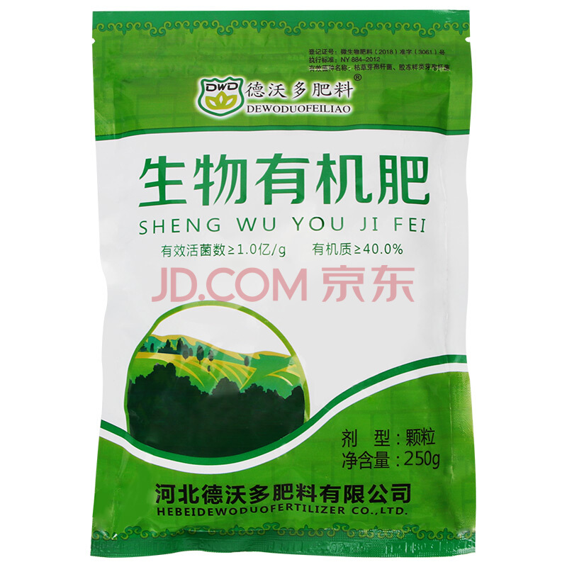
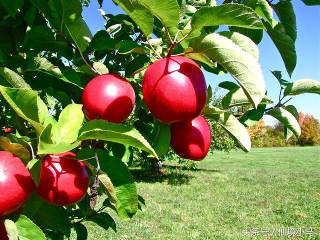

博客
一、增施有机肥料施用有机肥能够增加土壤有机质含量，促进土壤团粒结构形成，提高盐基离子代换量，从而增加土壤保肥力。有机肥料种类很多，施用时要注意肥料和土壤特点。
1、施用厩肥和人畜粪尿 2、施用堆肥和沼气肥 3、施用秸杆等有机物料  二、引入蚯蚓和微生物有机果园土壤是有活性的，其活性主要体现在土壤中含有丰富的微生物和蚯蚓小动物，因此，向果园土壤引入蚯蚓和微生物，可以提高土壤生物活性，还可促进养分循环，提高养分有效性。
1、培养和引入蚯蚓 2、增施微生物肥料  三、果园生草与覆草 1、果园生草生草是模拟农业土壤形成过程中天然植被的生长发育而对土壤进行的培肥。人工生草培肥地力过程比天然植被的自然培肥相比要快得多。
2、果园覆草覆草通过向土壤施入大量有机物料，改善土壤温度、水分、光照、通气等，进而改善土壤生物因子的生活环境，从而可加快土壤原有养分的循环过程，提高土壤肥力。这一点在丘陵山地、土层较浅薄的地块尤为明显。随着覆草时间的延长，有机物料降解后形成的有机质和释放出来的矿质养分融入土壤体系中，才真正意义上培肥了土壤。
三、果园间作绿肥间作和利用绿肥是果园土壤培肥的有效措施，间作绿肥是一种特殊的果园生草形式。
1、绿肥的间作 （1）因地制宜，选择良种： （2）及时播种，不误农时： （3）合理密植，不碍果树： （4）根瘤菌拌种，提高肥效： （5）以小肥养大肥，以磷增氮： （6）防治病虫，确保高产： 2、绿肥的利用果园施用绿肥主要有树下压青和挖坑沤制两种方式。 此外，绿肥还可以作冬夏覆盖物铺于行间，作保暖防冻及夏季抗旱之用，也可作堆肥或沤肥的原料，有些绿肥还可作饲料用于发展果区畜牧业。
3、绿肥的轮作 五、客土改土，合理施肥 2、冠下压土，加厚土层 3、营养沟改土 4、因土施肥，调剂土壤养分 5、有机肥和无机肥搭配使用 六、深翻熟化，改良土壤土壤改良方法很多，深翻熟化是传统而有效的措施。通过土壤深翻熟化，可促进果园土壤团粒结构形成，提高蓄水和保肥能力，增强透气性，提高养分有效性，结合施有机肥还可增加土壤有机质，提高土壤熟化程度和肥力。深翻效果一般可维持5-7年；若能在深翻时，埋入一定数量的植物残体，如树枝、落叶、秸秆等，更有利于深翻效果的充分发挥和维持更长时间。对于土层较薄、土壤质地较差、保水保肥力弱的果园，以及犁底层土壤比较紧实、孔隙度小、透气性差的果园都有必要进行深翻熟化。 深翻应结合施基肥同时进行，以秋季进行效果最好，因秋天降雨多、墒情好、土温适、时间长，有利于根系恢复和蓄水培肥。一般以9月中、下旬进行为宜，最晚不超过11月底。 常用深翻方式有两种，一种是扩穴深翻，即从幼树期开始，在挖坑栽植的基础上，根据根系伸展情况，从定植坑向外逐年通过深翻扩大树穴，直至株行连通。第二种是条沟深翻，即在幼树定植前采取开挖定植沟的园地，每年沿栽植沟外缘继续开挖，3-4年内全园翻通为止。盛果期树根系已布满全园，可实行隔行深翻，即隔一行翻一侧，逐年分次深翻，每次只伤一侧根系，对果树生长结果影响较小。深翻应纵向破除障碍，横向打通隔墙，多施有机肥。